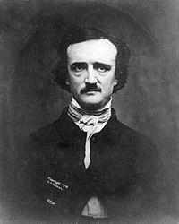

EDGAR ALLAN POE
Edgar Allan Poe (born Edgar Poe; January 19, 1809 – October 7, 1849) was an American writer, editor, and literary critic. Poe is best known for his poetry and short stories, particularly his tales of mystery and the macabre. He is widely regarded as a central figure of Romanticism in the United States and American literature as a whole, and he was one of the country's earliest practitioners of the short story. Poe is generally considered the inventor of the detective fiction genre and is further credited with contributing to what was then the emerging genre of science fiction. He was the first well-known American writer to try to earn a living through writing alone, resulting in a financially difficult life and career.
Poe was born in Boston, the second child of two actors, David and Elizabeth "Eliza" Arnold Hopkins Poe. David Poe abandoned the family in 1810, and Eliza Poe died the following year. Thus orphaned, the child was taken in by John and Frances Allan of Richmond, Virginia. They never formally adopted him, but Poe was with them well into young adulthood. Tension developed later as John Allan and Poe repeatedly clashed over debts, including those incurred by gambling, and the cost of secondary education for Poe. He attended the University of Virginia but left after a year due to lack of money. Poe quarreled with Allan over the funds for his education and enlisted in the Army in 1827 under an assumed name. It was at this time that his publishing career began, albeit humbly, with the anonymous collection Tamerlane and Other Poems (1827), credited only to "a Bostonian". With the death of Frances Allan in 1829, Poe and Allan reached a temporary rapprochement. However, Poe later failed as an officer cadet at West Point, declaring a firm wish to be a poet and writer, and he ultimately parted ways with John Allan.
Poe switched his focus to prose and spent the next several years working for literary journals and periodicals, becoming known for his own style of literary criticism. His work forced him to move among several cities, including Baltimore, Philadelphia, and New York City. In Richmond in 1836, he married Virginia Clemm, his 13-year-old cousin. In January 1845, Poe published his poem "The Raven" to instant success. His wife died of tuberculosis two years after its publication. For years, he had been planning to produce his own journal The Penn (later renamed The Stylus), though he died before it could be produced. Poe died in Baltimore on October 7, 1849, at age 40; the cause of his death is unknown and has been variously attributed to alcohol, "brain congestion", cholera, drugs, heart disease, rabies, suicide, tuberculosis, and other agents.
Poe and his works influenced literature in the United States and around the world, as well as in specialized fields such as cosmology and cryptography. Poe and his work appear throughout popular culture in literature, music, films, and television. A number of his homes are dedicated museums today. The Mystery Writers of America present an annual award known as the Edgar Award for distinguished work in the mystery genre.
This article uses material from the Wikipedia article "Edgar Allan Poe", which is released under the Creative Commons Attribution-Share-Alike License 4.0.